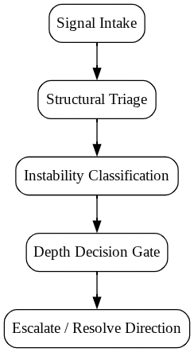

Structural intake system for identifying whether system instability is real, emergent, or misclassified noise.
RD-0 operates as a structural intake filter for ambiguous or unstable system states. It does not solve problems — it determines whether a problem structurally exists.
RD-0 classifies structural instability before any deeper diagnostic work is applied.
It prevents analytical depth from being misallocated to non-structural noise.
Structural traversal of system instability classification.

Human-in-the-loop structured intake process for diagnostic classification.
The output is directional clarity — not execution or implementation.